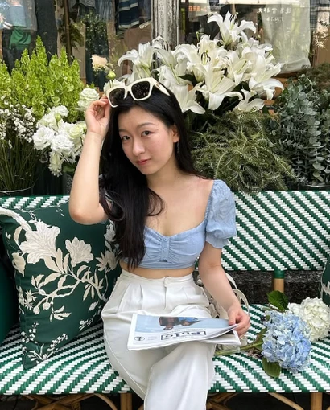

Hi, I’m Jeannelle, a PM who designs and builds tools for everyday life.
 University of Michigan
University of Michigan University of Michigan
University of MichiganProduct management · Healthcare
A drone delivery concept for urgent prescriptions in rural communities. A local pharmacist verifies the order, then a licensed drone operator flies the medication to the patient.
Interaction design · Tool library
A neighborhood tool library where older neighbors lend tools and students trade smartphone help.
Product discovery · Student mobility
A carpool prototype for U-M students who need a dependable ride for time-sensitive trips.


Product management · SI 511-155
Four coursework projects on deciding what to build, what to test, and how to measure success.

Moving to Ann Arbor made me wonder how newcomers could borrow a drill before they knew their neighbors. That question led me to design Neighbor Swap.
I turned feedback from Taipei customer workshops into Figma prototypes.
I compared ten rental competitors to guide product positioning.
I helped grow our community by 10,000 followers.
Ann Arbor · Expected May 2028
Master of Science in Information
Product discovery, interaction design, and product management.
Beijing · 2019–2023
Bachelor of Economics and Finance
For my thesis, I used Python and SPSS to study how people shop during the Double Eleven festival.
I shoot photos and edit Reels for @chez_jeannellee. Off camera, you’ll find me trying a new recipe, doing yoga, or at Pilates.
Dear reader,
Have a new product in mind? I’d love to hear what sparked the idea and talk it through over coffee.